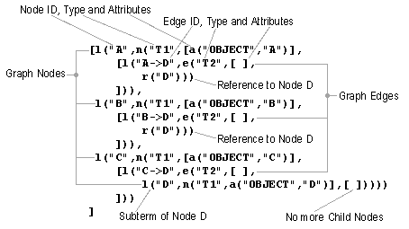
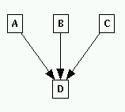

Syntax of the Term Representation
In general, a term is a structure where a superterm (parent) encloses its subterms (children), e.g. parent[child1,child2,child3]. Brackets "[...]" are used for a list of comma-separated elements of the same type. This scheme of expressing parent-child relationships can be applied recursively, so each child may have its own children, and so on. This notation allows to represent arbitrary tree structures.
To specify graphs, a mechanism of identifiers and references is used in uDraw(Graph). For example, if a child node has more than one parent node, then in the term representation the corresponding subgraph of the child appears in only one of the parents as a subterm. This subterm is marked with an identifier (in fact, all nodes and edges have to be marked with a unique identifier). All the other parents of the same child do not duplicate the subterm. Instead, they point to the child by using a reference to the identifier. Note that this way it is even possible to describe cyclic graphs. When loading a term representation, the system constructs an internal graph by resolving these references. The linear order of a node's subterm (where the identifier is declared) and a reference to this node (where the identifier is used) is arbitrary in a term representation, so references can be used before the corresponding identifier and subterm appears in the term representation.
Note: You have to make sure that each node and edge in a term representation has its own unique identifier, i.e. do not use the same ID for two objects. In multi-graph API mode, each context (graph) has its own scope, so there is no need to have unique identifiers between all contexts.
Beside the identifier (a unique string) and the list of child nodes (which is probably empty), each node also has a type and a list of attributes which are responsible for the image of a node in the visualization. Types and attributes are discussed below. Between a parent and the corresponding child node, there is an edge term in the term representation which also has its unique edge identifier, type and attributes. So, in fact the children of a node are edges and each edge has one node or reference as subterm.
For the exact syntax of the term representation (the startsymbol in this grammar is "graphterm"), please refer to the API chapter. When a graph is loaded from file, white space (blanks, tabs or returns) may occur at any position in a term representation. Of course, white space inside of strings is significant. When a graph is sent in term representation to the API, white space should be avoided and return characters are forbidden. The following figure illustrates the term representation of a small graph and the corresponding visualization in uDraw(Graph). A more complex example can be found at the end of this chapter.

A term representation of a graph

The corresponding graph visualization